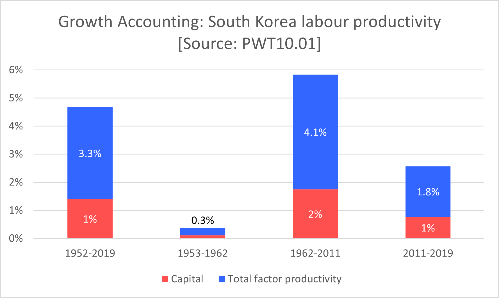
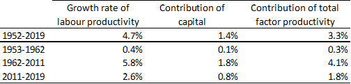

Chapter 2 Growth accounting
In this chapter, we will present the growth accounting technique to decompose labour productivity growth into the contribution of capital accumulation and the contribution of total factor productivity growth.
We will use data from the Penn World Table (Feenstra, Inklaar, and P.Timmer 2015), which allow us to compare real economic outcomes over time and across countries. All macroeconomic outcomes described, such as GDP, and capital stock, are real outcomes although this may not be explicitly mentioned for simplicity in the text.
2.1 Introduction
The starting point of growth theory is the assumption that there are three main proximate causes of long-term growth in output: technological progress, the accumulation of capital and improvements in the size and skills of the labour force. Growth theories attempt to understand the forces that drive these factors over time as well as their interactions by making assumptions regarding the behaviour of households and firms. In this chapter, we will present the growth accounting methodology, which is a method developed by economists to quantify the relative importance of these factors, and apply it to the case of labour productivity growth in South Korea.

(#fig:plot1 )Figure 1: South Korea: 1953-2019
Figure 1 shows that the strong growth in output per worker that occurred in South Korea between the 1960s and 1990s was also associated with a strong growth in the capital-labour ratio. This raises the following questions: What has been the role of capital accumulation in the growth of labour productivity in South Korea over this period? Was capital accumulation the main determinant of labour productivity growth or were there other factors that played more important roles?
The neoclassical production function states that output per hour can increase either if the capital-labour ratio (or capital per hour) increases or if total factor productivity (TFP) increases. The capital-labour ratio captures the intensity with which capital is employed in production. It is a better measure of the importance of capital accumulation than the capital stock, which would also be expected to increase with population. An increase in the capital-labour ratio implies that the capital stock is growing at a faster rate than the labour input. Total factor productivity includes any factor that improves the efficiency of the economy at combining capital and labour in order to produce total output. An increase in total factor productivity may consist in technological innovations such as the diffusion of software packages which dramatically decreased the time spent performing some administrative tasks or computations, or in the implementation of better management techniques, or a reallocation of capital and skills in more productive sectors or the most productive firms within a sector, etc…
Growth accounting can be used to provide a rough description of the growth of output per hour over a given interval of time in terms of the relative contribution of capital accumulation and total factor productivity growth. This method allowed R. Solow (1956) to assign close to 88% of the growth in output per hour in the US in the first part of the 20th century to TFP growth and the remaining 12% to capital accumulation. Since then economists have refined the methodology to allow for more precise estimates using more precise decompositions taking into account the role played by different types of capital and the different skill levels of the workforce in different sectors. The major role assigned to TFP growth in developed economies remains the key result obtained through this type of exercise. Another important contribution of growth accounting is to provide one method to estimate total factor productivity growth, a factor that is difficult to observe or measure, and even still difficult to explain.
Although growth accounting can yield some powerful insights, its ability to describe accurately the underlying economic mechanisms depends on strong assumptions, the failure of which may cast doubt on the conclusions that can be drawn from these calculations. In the next sections, we will explain how we arrive at the growth accounting decomposition and illustrate the use of this methodology by examining the case of labour productivity growth in South Korea between 1953 and 2019.
2.2 Growth accounting equation
In order to structure our investigation of the relative contributions of the factor inputs to the growth of output, we need to use a theoretical framework to organise our thoughts. Whether the results of a growth accounting provides a good picture of the growth experience of a country over a given period depends on how good an approximation these assumptions are for the economy in question at the moment of time considered.
2.2.1 Derivation
Assumption 1: Cobb-Douglas production function \[Y_t=A_tK_t^\beta L_t^{1-\beta}\] where \(Y_t\) is Real GDP, \(K_t\) is the capital stock (structures, transport and communication equipment, computers, software, machinery, …), \(L_t\) is the quantity of labour input (measured in number of workers, number of hours worked, hours worked adjusted for labour quality, …) and \(A_t\) is the stock of technology (may capture technological progress, the allocation of resources in the economy, the organisation of labour and management practices, …). Note that all variables are a function of time (they have a time subscript \(t\)). \(\beta\) is the elasticity of output with respect to capital and assumed to be constant and \(0<\beta<1\).
The Cobb-Douglas production function exhibits constant returns to scale and diminishing returns to both capital and labour. It also embodies the idea of a complementarity between capital and labour in production: more of each input, holding the other constant, increases the productivity of the other input.
Since we are interested in the growth of labour productivity (or output per worker), which is more informative about living standards than total output, we rewrite the Cobb-Douglas production function in intensive form as: \[y_t=A_tk_t^\beta \] where \(y\) is output per hour (labour productivity) and \(k\) is the capital-labour ratio.
We are interested in growth rates. How can we express the relationship between the growth rate of labour productivity (\(g_y\)) and the growth rates of the capital-labour ratio (\(g_k\)) and total factor productivity growth (\(g_A\)) implied by this production function? By taking the logs.
Taking the logarithm on both sides of the production function: \[\ln{y_t} = ln{A_t} + \beta \ln{k_t}\]
where we use the following properties of logarithms: \(\ln{ab} = \ln{a} + \ln{b}\) and \(\ln{\frac{a}{b}} = \ln{a} - \ln{b}\).
Subtracting \(\ln{y_{t-1}} = ln{A_{t-1}} + \beta \ln{k_{t-1}}\) from the previous expression yields:
\[\ln{y_t} - \ln{y_{t-1}}= ln{A_t} - ln{A_{t-1}} + \beta (\ln{k_t} - \ln{k_{t-1}})\]
Using the approximation \(g_{x,t} \approx \ln{x_t} - \ln{x_{t-1}}\) which holds for small values of \(g_{x,t}\) (see Chapter 1):
\[g_{y,t}= g_{A,t} + \beta g_{k,t}\] where \(\beta g_{k,t}\) is the contribution of capital accumulation and \(g_{A,t}\) is the contribution of TFP growth to labour productivity growth.
2.2.2 Estimation
National accounts provide data on GDP, labour and capital from which we can easily recover estimates for \(g_y\) and \(g_k\).
To obtain estimates of the elasticity of capita \(\beta\), several options are possible:
- Set it equal to 0.3 as a rule of thumb. Recent studies (Vollrath, 2024) have shown that for the United States, this elasticity has been relatively constant around 0.2-0.3. To obtain such estimates, the authors of these studies do not rely on the assumption of perfect competition in the product markets but still need to make additional assumptions, such that firms choose the quantity of inputs that are cost minimising. This elasticity may be expected to be relatively similar in other developed economies. However, they may differ significantly in developing economies.
- Use data on the labour share of income, provided in National accounts, from which it is possible to recover an estimate of \(\beta\) as (\(1 - \text{labour share of income}\)). This relies on the assumption that markets are perfectly competitive, hence firms make zero profits, the wage and rental rate of capital are equal to their marginal products and, assuming constant returns to scale, total income is equal to the sum of the income distributed to labour and capital as a reward for their services. If product markets are not competitive so that firms have the ability to set the price of their final products, then this method will tend to overestimate the elasticity of capital.
The default value of \(\beta\) in all the examples will be 0.3. But it will be possible to experiment with different values of \(\beta\) to check the robustness of results.
Finally, total factor productivity growth is not directly observed but can be estimated as the residual of the growth accounting equation:
\[ g_{A,t}= g_{y,t} - \beta g_{k,t} \]
2.3 Case study: South Korea (1953-2019)
The table and chart below present the same growth accounting results for South Korea over the period 1953-2019 in two different ways.

 Growth rates are compound annual growth rates.
Interpretation and discussion
Labour productivity over the full sample period grew at the average annual rate of 4.7%; this is faster than the growth in US labour productivity. This is indicating that the economy of South Korea was converging towards the US level of labour productivity. South Korea experienced a period of fast growth growing at an average rate of about 6% per year for about 50 years between the 1960s and 2000s. Its growth has since more than halved to less than 3%, similarly to other developed economies.
The growth of capital per hour contributed 1.4% towards the growth of labour productivity and TFP growth contributed the remaining 3.3%. TFP growth was therefore the main factor of growth over the full sample period, contributing about 70% of the growth in labour productivity and capital accumulation the remaining 30%. These shares remained remarkably constant over all subperiods.
These results suggest that the key to understanding the growth experience of South Korea is to look into the drivers of TFP growth. In particular, it might be interesting to disentangle the role of human capital accumulation (education, on-the-job-training, …) from other factors of total factor productivity growth. This would allow us to determine how much weight was given in the growth strategy to the accumulation of factors of production as opposed to increases in efficiency. This could provide some clue as to the recent slowdown in TFP growth.
2.4 Exercise (Week 14)
This exercise guides you through the growth accounting decomposition of UK labour productivity as seen in the lecture slides in week 13, then ask you to do the same for US labour productivity and to finally compare the results for the two countries.
In order to perform these practice questions, you need to work on a laptop or a desktop computer (if possible using a mouse), not a tablet. You also need to have installed Excel on your device (you may not be able to perform all the operations using the web version).
Part 1: Preliminaries
Download and learn more about the Penn World Table database by checking the information on this website: PWT. [You may also look up this prompt in Copilot: “Explain what the Penn World Table data is, what is its significance, who is responsible for it and what are its objectives”.]
If you have not done so already, go through the Penn World Table in Excel tutorial (click on blue link to access it) which shows how to perform basic operations and growth accounting using the Penn World Table dataset in Excel and make sure you are able to replicate the results.
Part 2: Describing long-run trends in productivity
Create a new Excel sheet with the following variables for the United Kingdom: “rgdpna”, “rnna”, “pop”, “emp”, “avh” and “labsh”. Check the variable definitions in the “Legend” sheet.
In a new column, create a new variable for labour productivity labelled “y” using “rgdpna”, “emp” and “avh”. Then create the (natural) logarithm of this variable, labelled “lny”.
Make a plot of the logarithm of UK labour productivity. You may add a trendline and its equation. Can you identify the three subperiods described in the week 13 slides?
Repeat 1 to 3 using data for the United States. Compare the trends in labour productivity growth in the two countries.
Note: Table 1 (p 3154) in Feenstra et al. (link) explains why “rgdpna” is the appropriate real GDP variable to study the growth of GDP over time in a single country.
Part 3: Growth accounting decompositions
In this part, you will perform the growth accounting decomposition of labour productivity growth in the UK and the US. We will use the following growth accounting equation: \[ g_y = g_A + \beta g_k \] where \(g_y\) is the growth rate of labour productivity, \(g_k\) is the growth rate of the capital-labour ratio, \(g_A\) is the growth rate of total factor productivity and \(\beta\) is the elasticity of output with respect to capital. We will assume that \(\beta = 0.3\) initially.
Annual growth accounting decompositions:
In a new column, create a new variable for the capital-labour ratio (capital per hour worked) labelled “k” using “rnna”, “emp” and “avh”.
In two new columns, create the annual growth rate of “y” (labelled “gy”) and the annual growth rate of “k” (labelled “gk”).
In two new columns, create the annual contribution of capital accumulation (labelled “bgk”) by multiplying “gk” by \(\beta = 0.3\) in each year and the annual growth rate of total factor productivity (labelled “gA”) as the residual from the growth accounting equation: \(g_A = g_y - \beta g_k\).
Make a line plot of “gy”, “bgk” and “gA” and interpret the results.
Growth accounting decompositions over intervals of time:
In Excel, construct a table as in the Excel tutorial - Section 7.4 containing the full sample period and each subperiod identified in Part 2 in each row.
Hint: use the compound growth rate formula, \(g_{x,t-s} = \left(\frac{x_s}{x_t}\right)^{\frac{1}{s-t}}-1\), to calculate average growth rates between any two periods \(t\) and \(s\) in this exercise.
Column 1: calculate the average annual growth rate of UK labour productivity (\(g_y\)) over the full sample period and over each subperiod.
Column 2: calculate the average annual growth rate of the UK capital-labour (\(g_k\)) over the full sample period and over each subperiod.
Column 3: calculate the contribution of capital accumulation to UK labour productivity (\(\beta g_k\)) over the full sample period and over each subperiod.
Column 4: calculate the contribution of TFP growth to UK labour productivity (\(g_A\)) over the full sample period and over each subperiod as the residual of the growth accounting equation: \(g_A = g_y - \beta g_k\).
Construct a table (as below) and a column chart to summarize the results of the UK labour productivity growth accounting over the full sample period and each subperiod (see the video in PWT Excel tutorial - Section 7.4 for how to construct the column chart).
Repeat 1 to 5 for the US using the same subperiods. Compare the growth accounting results in the two countries.
(optional) Repeat 1 to 6 using the the average of the “labsh” variable to obtain an estimate of the elasticity of capital \(\beta\). Under what assumption is this a valid method of estimation for \(\beta\)? How do the results change when using this alternative measure of \(\beta\)?
| gy | bgk | gA | |
|---|---|---|---|
| 1950-2019 | |||
| First subperiod | |||
| Second subperiod | |||
| Third subperiod |
Part 4: Sources of changes in labour productivity
This will be covered in the class if time permits.
Based on your results in the previous part, investigate the possible underlying causes explaining the differences in capital accumulation and TFP growth between the two countries over the full sample period or in some subperiod.
These underlying causes may refer to differences in economic or political context (eg the UK faced higher reconstruction costs than the US in 1950), differences in household behaviour, differences in policies, …
Can you identify one or two arguments to explain some differences in labour productivity growth trends you have identified in Part 3 between the United Kingdom and the United States? Can you provide one or two academic sources providing support to these arguments?
To address this question, you may use these two resources:
- The university library contains the most extensive database of academic papers at your disposal and more resources. Click on this link to start exploring.
- You may use Copilot as a starting point. A useful prompt: “Can you provide 5 differences between the United Kingdom and the United States which may be related to the wider economic context, policies or the behaviour of households and firms which may explain the lower capital accumulation of capital stock per worker in the US relative to the UK between 1950 and 1973? Can you provide detailed academic sources in support of each argument you make in this answer?” Retain only the most promising arguments and check the sources!
2.5 Exercise: Formative assessment (Week 15)
Part 1: Preliminaries
Before attempting this exercise:
- Check your team allocation in the Group formative assessment folder on Blackboard –> Learning Materials.
- Agree with your team on the pair of countries you want to focus in your formative assessment. Do not choose randomly a pair of countries. Here are some ideas to help guide your choice:
- Select a pair of countries satisfying the conditions stated in Country selection (Formative brief).
- Select a pair of countries which you think may offer an interesting contrast (different policies, political institutions, economic success, …) but are similar enough that they may lead to meaningful comparisons (similar sizes, institutions, shared initial or final level of labour productivity, shocks or external events, region, economic specialisation, shared past …).
- Select a pair of countries satisfying the conditions stated in Country selection (Formative brief).
Part 2: Growth accounting
Each team member should do this on their own:
- Make two plots describing labour productivity growth in each countries. Identify 2 to 4 subperiods. Produce growth accounting results for the two countries over the full sample period and the same subperiods.
- Compare the results of your analysis for the two countries. List the similarities and differences in the growth trends and growth accounting results. Does this comparison suggest some interesting questions, ideas, differences worthy of investigation?
Part 3: Sources of changes in labour productivity
Can you identify one or two arguments to explain some differences in labour productivity growth trends you have identified in Part 2 between your two countries? Can you provide one or two academic sources providing support to these arguments?
To address this question, you may use these two resources:
- The university library contains the most extensive database of academic papers at your disposal and more resources. Click on this link to start exploring.
- You may use Copilot as a starting point. An example of a prompt you might use (applied to the example of the US and UK in the previous exercise): “Can you provide 5 differences between the United Kingdom and the United States which may be related to the wider economic context, policies or the behaviour of households and firms which may explain the reduce role of capital accumulation in the US relative to the UK between 1950 and 1973? Can you provide detailed academic sources in support of each argument you make in this answer?”
- Make a list of the most promising arguments, check that they can all be linked to some academic sources!